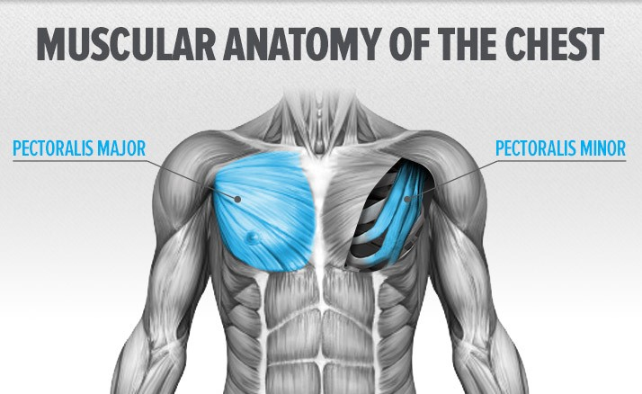

Göğüs Kası için Antrenman Tavsiyeleri
Antrenman sıklığını doğru artırmak: Göğüs kası kolay gelişen kaslar değildir .
İleri seviye bir sporcuysanız haftada 1 çalışmak sizin için belki de yeterli olmayacaktır, bunu en az 2 güne çıkarmayı deneyin, işinize yarayabilir.
Full body antrenman genelde splitten iyidir. Bu yüzden sık çalışmak adına full body antrenmanlara yönelebilirsiniz.
Kuvvet odaklı da çalışın: Sadece hipertrofi odaklı değil yeri geldiği zaman kuvvetinizi arttırmaya yönelik çalışmalara da yer verin antrenmanlarınızda, bunun için bench press hareketi çok faydalı olacaktır.
Farklı tekrar aralıkları kullanın: Sürekli aynı tekrar aralıkları ile çalışmak uzun vadede size fayda sağlamayabilir, bazen değişik sistemler ile farklı uygulamalar deneyebilirsiniz. Örneğin 5 tekrar da yapın, 15 tekrar da.
Hareketi doğru formda uygulamaya özen göstermek: Bu madde göğüs kaslarının gelişimi için çok önemlidir, hareketi ne kadar doğru formda uygularsanız o kadar da kaslarınızı iyi şekilde aktif edebileceksiniz.
Salonlarda fiziği güzel olan herkese güvenmeyin: Fiziği yeterli düzeyde olan herkesin yeterli düzeyde bilgisi olmayabilir ve sizi yapmanız gerekenler ile ilgili yanlış yönlendirebilir, bunlara dikkat edin.
Serbest ağırlıklar ile makineyi kombine edin: Makineler ve serbest ağırlıklar ile yapılan çalışmalara antrenmanlarınızda yer verin. Özellikle serbest ağırlıklarda daha fazla kas aktif olacaktır ve gelişimize fayda sağlayacaktır. Ama seviyeniz ilerledikçe makinelerden de yararlanın.
Göğüs Kası Anatomisi
Göğüs kasını en iyi şekilde çalıştırmanın yolu biraz da anatomisini bilmekten geçiyor.
Hangi hareket hangi kasımızı daha çok aktif ediyor gibi şeyleri bilirsek ve ona göre antrenmanımızı düzenlersek istediğimiz göğüs kaslarına çok daha çabuk şekilde ulaşabiliriz.

- M.Pectoralis Major (Clavicular Parça)
- M.Pectoralis Major (Sternal Parça)
- M.Pectoralis Major (Abdominal Parça)
- M.Pectoralis Minor
En İyi Göğüs Hareketleri
- Barbell Bench Press: M.Pectoralis Major (Sternal parça)
- Dumbell Bench Press: M. Pectoralis Major (Sternal parça)
- Decline Dumbell Press: M.Pectoralis Major (Abdominal parça)
- Push Up: M.Pectoralis Major (Sternal parça)
- İncline Dumbell Press: M.Pectoralis Major (Clavicular parça)
- Chest Dip: M.Pectoralis Major (Abdominal parça)
Hərəkətləri video şəklində görmək üçün
click'lə
Alt sinə üçün hərəkətlər
Üst sinə üçün hərəkətlər
Genetik ve Göğüs Kasları
Göğüs kası gelişiminde genetiğinizin tabii ki de büyük bir önemi vardır.
İyi bir göğüs kası genetiğine sahipseniz kaslarınız çabuk gelişebilir ve güzel görüntüye sahip olabilir.
Her insanın göğüs kaslarının şekli farklıdır, göğüs kaslarınızın şeklini değiştiremezsiniz fakat geliştirebilirsiniz, genetiğiniz kötü dahi olsa vazgeçmeden antrenmanlarınıza kararlı şekilde devam edin.